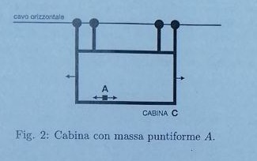

Pigkappa26 nov 2024, 2:03
Una cabina C di una funivia può scorrere senza attrito su un cavo orizzontale rigido a cui è vincolata tramite una serie di bracci verticali, che ne garantiscono la stabilità impedendo ogni altro movimento (verticale, oscillatorio, trasversale).
Come mostrato in figura, all'interno della cabina, poggiata sul pavimento, si trova una massa puntiforme A che è libera di muoversi in direzione orizzontale, restando a contatto con la base della cabina stessa, al più subendo urti perfettamente elastici con le pareti di C.
Un osservatore esterno che monitora il sistema da lontano nota che, a intervalli regolari di durata \(\displaystyle \Delta T_1\) e \(\displaystyle \Delta T_2\), la cabina passa da uno stato di moto \(\displaystyle S_1\) in cui si sposta orizzontamente lungo l'asse con velocità costante \(\displaystyle V_C\), a uno stato \(\displaystyle S_2\) in cui è perfettamente ferma.
Si proponga una spiegazione dell'effetto e si determini il rapporto tra \(\displaystyle \Delta T_1\) e \(\displaystyle \Delta T_2\).
Supponendo che l'osservatore possa misurare tali grandezze, nonché le dimensioni geometriche della cabina e la velocità \(\displaystyle V_C\), si determini il rapporto \(\displaystyle \mu\) tra le masse di C e di A.

Pigkappa4 dic 2024, 14:24
Stai dicendo che la differenza tra le due velocità in un urto elastico si conserva? Mi sembra una cosa inventata sinceramente :geek:
Sappiamo la velocità della cabina prima e dopo l'urto. Ci mancano le velocità della massa puntiforme. Si conservano quantità di moto ed energia. Da questi due criteri si scrivono due equazioni.
Pigkappa11 dic 2024, 1:29
Quel segno meno all'inizio della tua equazione dell'energia mi sembra sospetto.
Faccio il conto per esteso e vediamo se mi torna uguale a te. Io non starei a lavorare in termini di velocità relativa ma semplicemente di velocità rispetto ad un osservatore esterno. Imposterei così.
\(\displaystyle \mu V_C + v_1 = v_2\)
\(\displaystyle \frac{1}{2} \mu V_C^2 + \frac{1}{2} v_1^2 = \frac{1}{2} v_2^2\)
Dalla prima sostituisco nella seconda, e semplifico:
\(\displaystyle \mu V_C^2 + v_1^2 = (\mu V_C + v_1)^2\)
Espandendo, eliminando \(\displaystyle v_1\), dividendo per \(\displaystyle \mu V_C\) che assumiamo diverso da zero:
\(\displaystyle V_C = \mu V_C + 2 v_1 \rightarrow v_1 = \frac{(1-\mu) V_C}{2}\)
Dalla prima equazione si ottiene \(\displaystyle v_2 = \frac{(1+\mu)V_C}{2}\).
La mia \(\displaystyle v_2\) dovrebbe essere uguale alla tua \(\displaystyle v_{R2}\) ma non lo è, purtroppo...
Pigkappa14 dic 2024, 22:35
Nel mio post del 3 Dicembre stavo seguendo la tua notazione nella quale \(\displaystyle V_C\) era positivo verso sinistra e le altre velocita' verso destra. Notazione legittima e che potrebbe essere utile perche' in generale ci aspettiamo che queste velocita' abbiano segni diversi.
Nel post del 10 Dicembre invece usavo la notazione che mi pare piu' naturale, in cui tutte le velocita' sono positive verso destra. Avrei dovuto segnalarlo per chiarezza, chiedo scusa.
In ogni caso cambia solo il segno di \(\displaystyle V_C\) nella prima equazione e nei risultati finali, ma ovviamente \(\displaystyle V_C^2\) rimane sempre positivo essendo un quadrato, e nella tua equazione dell'energia non lo era.
Usando i miei risultati per \(\displaystyle v_1, v_2\), scrivo:
\(\displaystyle \Delta T_1 = \frac{L}{|V_C - v_1|} = \frac{2 L}{(1+\mu) V_C}\)
\(\displaystyle \Delta T_2 = \frac{L}{V_2} = \frac{2 L}{(1+\mu) V_C}\)
Che a me darebbe:
\(\displaystyle \frac{\Delta T_2}{\Delta T_1} = 1\)
Mi viene quindi diverso da te... Penso sia perche' nel post del 12 Dicembre, a differenza dei tuoi post precedenti, non usavi piu' le velocita' relative. Questo va bene e anche io sto facendo cosi', ma allora al denominatore di \(\displaystyle \Delta T_1\) devi fare attenzione e usare \(\displaystyle V_C - v_1\) invece di \(\displaystyle v_1\).
Il mio risultato ha senso?
Se \(\displaystyle \mu \rightarrow + \infty\), la scatola esterna rimane praticamente ferma ovvero \(\displaystyle |V_C| \ll |v_1|\) e \(\displaystyle |V_C| \ll |v_2|\), la particella ha sempre la stessa velocita' andando avanti e indietro, quindi ci aspettiamo di trovare \(\displaystyle \frac{\Delta T_2}{\Delta T_1} \approx 1\), che combacia con il risultato qua sopra.
Il tuo risultato invece da' \(\displaystyle \frac{\Delta T_2}{\Delta T_1} \approx 3\) che mi sembra poco intuitivo. E se \(\displaystyle \mu = 0.5\) trovi un rapporto negativo che e' a sua volta un po' strano.
Una spiegazione del perche' viene 1 potrebbe essere questa. Osserviamo lo stesso moto in un sistema di riferimento \(\displaystyle S_2\) che si muove con velocita' \(\displaystyle V_C\) rispetto al sistema iniziale \(\displaystyle S_1\). Allora il moto e' simile a prima, ma abbiamo invertito quello che succede negli intervalli 1 e 2, e il segno della velocita': adesso nell'intervallo 1 la scatola e' ferma, nell'intervallo 2 si muove con velocita' \(\displaystyle -V_C\).
L'intervallo \(\displaystyle \Delta T_1\) e' lo stesso in entrambi i sistemi di riferimento, e nella relativita' galileiana cambiare sistema di riferimento inerziale non cambia i tempi, quindi: \(\displaystyle \Delta T_1|_{S_2} = \Delta T_1|_{S_1}\), dove indico con \(\displaystyle \Delta T_1|_{S_2}\) il valore di \(\displaystyle \Delta T_1\) misurato nel sistema \(\displaystyle S_2\), e allo stesso modo uso la notazione \(\displaystyle |_{S_1}\).
Pero' potremmo anche calcolare \(\displaystyle \Delta T_1|_{S_2}\) risolvendo, nel sistema \(\displaystyle S_2\), il problema che avevamo risolto in \(\displaystyle S_1\) per calcolare \(\displaystyle \Delta T_2\). Poiche' il problema e' identico a parte il segno delle velocita' (la lunghezza \(\displaystyle L\) non cambia perche' non siamo in relativita'), troveremo \(\displaystyle \Delta T_1|_{S_2} = \Delta T_2|_{S_1}\).
Mettendo insieme queste equazioni e' chiaro che \(\displaystyle \Delta T_1 = \Delta T_2\)
Pigkappa19 dic 2024, 21:19
Sì, a parte per un \(V_C\) che manca al denominatore.
Pigkappa19 dic 2024, 21:20
Se vuoi posta tu il prossimo della staffetta, potenzialmente il 3 della SNS di quest'anno, sennò quando ho tempo lo posto io